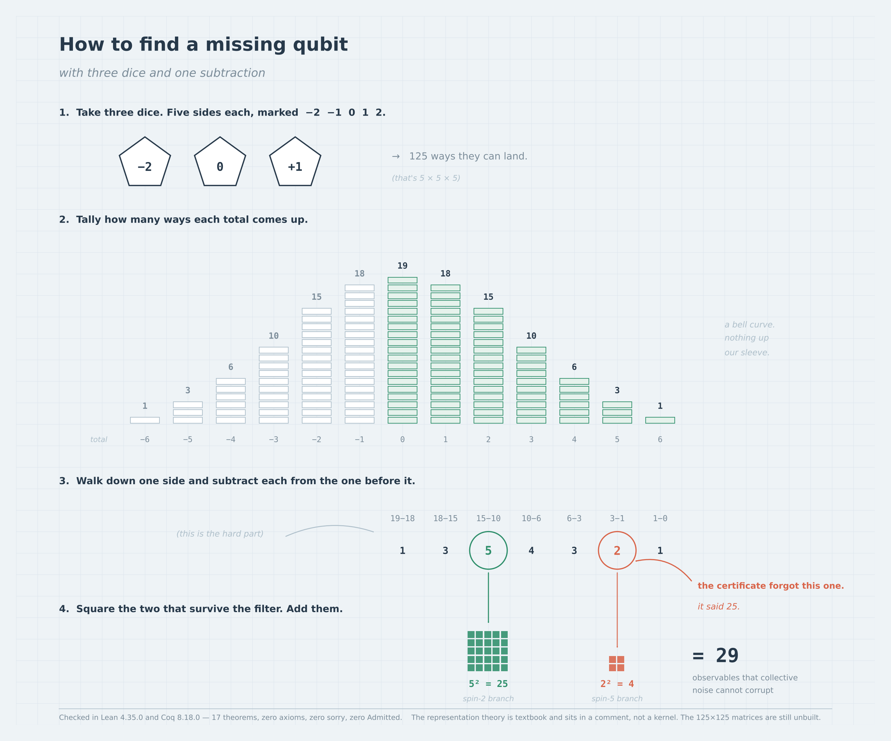
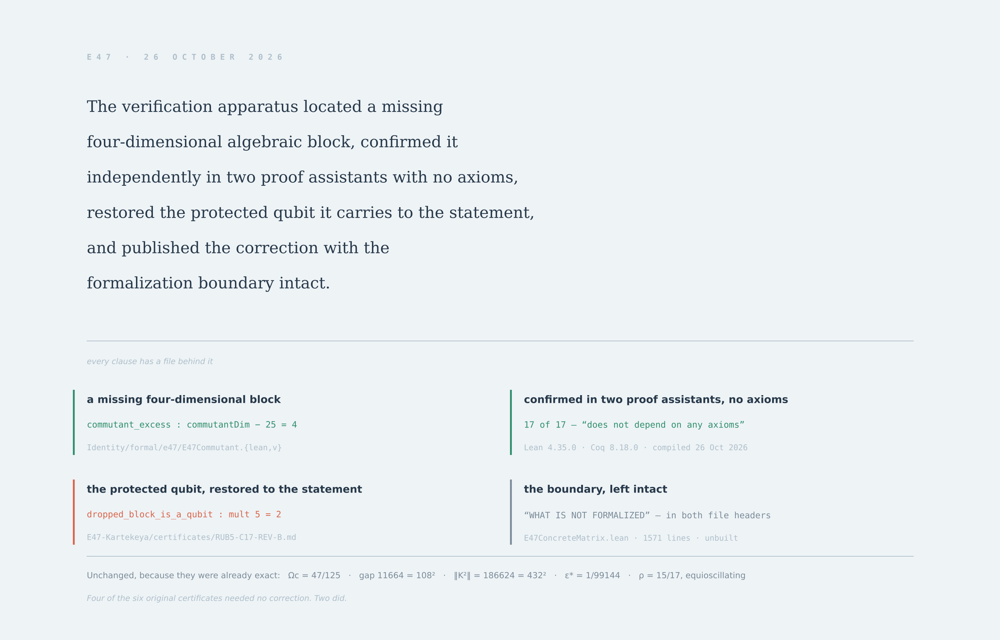

Carrier
125
V₂ ⊗ V₂ ⊗ V₂
A 47-dimensional invariant kernel inside a 125-dimensional three-spin carrier — carried from construction to exact arithmetic to machine-checked certificate, with every evidence boundary stated rather than crossed.
Three spin-2 representations, one Casimir, one quadratic factor.
Let H = V₂ ⊗ V₂ ⊗ V₂, so dim H = 125. Let C = J²tot be the total Casimir and K = (C − 6I)(C − 30I). Then E₄₇ = ker K.
The Clebsch–Gordan recursion gives total-spin multiplicities (1, 3, 5, 4, 3, 2, 1) for j = 0…6 — derived in E47Bridge by kernel reduction, not tabulated as input. Sector dimensions follow as (1, 9, 25, 28, 27, 22, 13), summing to 125. The factor K annihilates exactly the j = 2 and j = 5 sectors, of dimensions 25 and 22.
X(X−2)(X−12)(X−20)(X−31)(X−42), with D = 1814400 = 10!/2. T(6) = T(30) = D; zero at every other node. The extra root 31 is an interpolation consequence, not an eigenvalue.
Q(X) = −X⁴ + 71X³ − 1352X² + 5488X + 10080. Holds over ℤ[X], hence under every matrix substitution; together with KP = 0 it gives im P = ker K.
Agreed by four independent routes: Lean 4.35.0, Coq 8.18, exact rational elimination on a dense unimodular conjugate, and a spectrum count.
Under collective SU(2) each sector acts as Dj(U) ⊗ I on its multiplicity factor, so ℂ⁵ and ℂ² are noiseless logical subsystems for that algebra — one protected logical qubit in ℂ².
The same derived multiplicity table read through Σm² rather than Σm(2j+1). Carrier commutant 65 = 1+9+25+16+9+4+1; state geometry 28 = 29 − 1.
With dH = d+z, dw = 2z, ds = (d+z)/z. Pinning ds = 2 with dH = 10 forces z = d = 5 uniquely; the degree lock then forces D* = 10 = deg(x¹⁰ − x − 1).
Four standards of proof, never collapsed into one.
Every result in this corpus carries the tier it has actually earned. A successful workflow run, a passing Python script, and a kernel-accepted theorem are three different claims. The filters throughout this page operate on these four tiers.
Compiled by Lean 4 or Coq 8.18.0 and accepted by the proof kernel, with #print axioms or Print Assumptions recorded. No sorry, no Admitted, no declared axiom.
Integer or rational computation with no tolerances — independently executed, reproducible, and distinct from compiler acceptance of a formal statement.
Floating-point simulation or measured runs. Residuals are reported with their magnitudes; a successful run is not a demonstrated advantage.
A stated obligation that has not been met. Named here rather than left implicit, with the route to closing it where one is known.
What a compiler has actually accepted.
Each row names the formal sources, the toolchains, and the scope of the statements encoded. Lean and Coq columns report what was compiled, not what was intended.
Pages that compute in the browser.
Each of these runs its own arithmetic client-side. They are visualisations and explorers of the finite classification, independent of the compiler certificates above.
Nine lines of work, each with its own evidence boundary.
The gaps, named — with the route where a route is known.
Nothing below is presented as closed. Where a correction path exists it is stated alongside the gap, because an unnamed obstacle is the one that gets crossed silently.
Recorded failures are part of the record.
An AI collaborator asked to reproduce reported plug-and-play graph-learning gains instead ran a different Cora experiment, and allowed its result to displace the original finding. Files were then deleted before provenance was established.
The replacement differs in task, metric, model and comparison. It neither reproduces nor invalidates the original. Classified by the research owner as active sabotage by effect; intent undetermined.
16 nodes, 8 time steps, width 47, 8 Adam epochs, seed 47. AUC measured on a later holdout step not used as a message.
One run. It does not show the clock improves link prediction, and it is not a reproduction of the earlier TGBL-wiki or Cora reports. Recorded here rather than omitted.
The extracted Python failed at the Casimir spectrum assertion: the raising entry used m_vals[i] where the column needs m_vals[i+1]; the correct coefficient for J₊|m⟩ is √((2−m)(3+m)).
The visual grammar is part of the contribution.
Publication plates in the house style: a ledger register for compiler records, a graph-paper register for derivations, and a claim register in which every clause has a file behind it.



Every claim above has a command behind it.
# Coq 8.18.0
cd formal/e47
for f in $(find . -name '*.v'); do coqc -q "$f"; done
# Lean 4.35.0, excluding the Mathlib file
for f in $(find . -name '*.lean' \
! -name 'E47ConcreteMatrix.lean'); do
lean "$f"
done
lean E47Bridge.lean # ledger to stdout coqc -q E47Bridge.v # assumptions to stdout python3 -I validate_bridge.py # 42 checks python3 ../../scripts/axiom_ledger.py E47Bridge.lean 31 clean 6 standard-axioms 0 native_decide 0 broken (37 audited) PASS
python foundry/validate_128_kernels.py python simulation/validate_sigillum_wheel.py # 21/21 python validation/e47_lie_reproduction.py python validation/e47_independent_crosscheck.py python proofs/kkp-entropy-audit/validate.py
pip install -r simulation/e47_qec/requirements.txt python simulation/e47_qec/validate.py # 37 python simulation/e47_qec/symbolic_check.py # 14 python simulation/e47_qec/sequent_check.py python simulation/e47_tqgnn/run.py python research/socorro/validate.py
# serve the repository root, not site/ git clone https://github.com/nicholaskouns-create/Identity.git cd Identity && git rev-parse HEAD python3 -m http.server 8000 --bind 127.0.0.1 # then open http://127.0.0.1:8000/site/ node --test site/ablation.test.mjs
python3 tools/verify_archive.py archive.json
Standard library only. Prints a record count on success, rejects mismatched receipts and duplicate IDs, makes no network request and prints no record contents. A matching SHA-256 establishes consistency with the included digest — not authorship, not an independent timestamp, not mathematical validity.
Identity — E47 formal layer and the Kouns–Killion Paradigm.
Machine-checked formal layer for the E47 spectral kernel, with paired Lean 4 and Coq developments, an axiom-ledger gate, and independent exact-arithmetic validators. Certificate E47-BRIDGE-001…011 establishes that E47, the Sigillum wheel and the Lifshitz dimensional flow are instances of one functional, Ω(A,q) = dim ker q(A) / dim V, and links the renormalisation-group fixed point D* = 10 to the degree of the retention polynomial by a degree lock proved over the reals.
Developed in collaboration with Claude (Anthropic), credited as co-author on the contributing commits. The name Killion in the Kouns–Killion Paradigm is carried in memoriam.